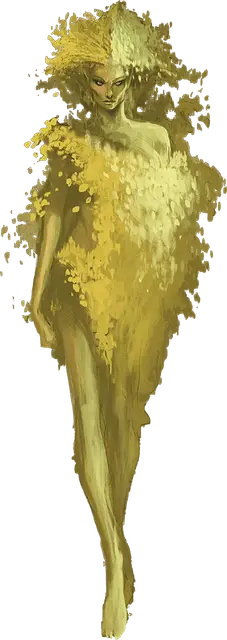

Дриада
Dryad
Средняя Фея (Фея), нейтральная

Класс Доспеха 11 (16 с дубовой корой)
Хиты 22 (5к8)
Скорость 30 футов
| мод | спас | ||
|---|---|---|---|
| СИЛ | 10 | +0 | +0 |
| ЛОВ | 12 | +1 | +1 |
| ТЕЛ | 11 | +0 | +0 |
| мод | спас | ||
|---|---|---|---|
| ИНТ | 14 | +2 | +2 |
| МДР | 15 | +2 | +2 |
| ХАР | 18 | +4 | +4 |
Навыки Восприятие +4, Скрытность +5
Чувства тёмное зрение 60 футов, пассивное Восприятие 14
Языки Сильван, Эльфийский
Опасность 1 (200 опыта)
Бонус мастерства +2
Среда обитания Лес
Особенности
Врождённое колдовство. Базовой характеристикой дриады является Харизма (Сл спасброска от заклинания 14). Дриада может накладывать следующие заклинания, не нуждаясь в материальных компонентах:
• Неограниченно: искусство друидов [druidcraft];
• 3/день каждое: опутывание [entangle], чудо-ягоды [goodberry];
• 1/день каждое: бесследное передвижение [pass without trace], дубинка [shillelagh], дубовая кора [barkskin].
Сопротивление магии. Дриада совершает с преимуществом спасброски от заклинаний и прочих магических эффектов.
Общение со зверьми и растениями. Дриада может общаться со зверьми и растениями, как если бы у них был общий язык.
Путешествие через деревья. Один раз в свой ход дриада может использовать 10 футов перемещения на то, чтобы магическим образом войти в живое дерево в пределах досягаемости и выйти из второго живого дерева в пределах 60 футов от первого, появляясь в свободном пространстве в пределах 5 футов от второго дерева. Оба дерева должны быть как минимум Большого размера.
Действия
Дубина. Рукопашная атака оружием: +2 к попаданию (+6 к попаданию с дубинкой), досягаемость 5 футов, одна цель. Попадание: Дробящий урон 2 (1к4), или дробящий урон 8 (1к8 + 4) с дубинкой.
Фейское очарование. Дриада нацеливается на одного гуманоида или зверя, которого видит в пределах 30 футов от себя. Если цель видит дриаду, она должна преуспеть в спасброске Мудрости Сл 14, иначе станет магическим образом очарованной. Очарованное существо считает дриаду верным другом, о котором нужно заботиться и которого нужно защищать. Несмотря на то, что цель не находится под контролем дриады, она выполняет её просьбы.
Каждый раз, когда дриада или её союзники причиняют цели вред, та может повторить спасбросок, оканчивая эффект на себе при успехе. В противном случае эффект длится 24 часа, или пока дриада не умрёт. Чтобы эффект не прерывался, дриада должна находиться на одном плане с целью, и дриада может сама окончить эффект бонусным действием. Если спасбросок цели был успешным, цель получает иммунитет к Фейскому очарованию этой дриады на следующие 24 часа.
У дриады одновременно очарованными может быть не более одного гуманоида и не более трёх зверей.
Описание
Путешественники, войдя в лес, могут увидеть мельком женственную фигуру, порхающую между деревьями. Тёплый смех, дребезжащий в воздухе, уводит тех, кто слышит его, вглубь, в изумрудные тени.
Родство с деревьями. Могущественные феи иногда привязывают более слабых фейских духов к деревьям, превращая их в дриад. Иногда это делается в наказание, когда фейский дух влюбляется в смертного, а такая любовь запретна.
Дриада может выйти из дерева и путешествовать по окрестным землям, но дерево остаётся её домом и привязывает её к миру. Пока дерево остаётся здоровым и невредимым, дриада остаётся вечно молодой и очаровательной. Она страдает, если дереву причинён вред. Если дерево будет уничтожено дриада погружается в безумие.
Уединённые феи. Дриады выступают в качестве опекунов своих лесных владений. Застенчивые и отчуждённые, они наблюдают за нарушителями из деревьев. Дриады, поражённые красотой незнакомца, могут пожелать узнать его более тщательно, возможно даже постараются заманить странника подальше, чтобы очаровать.
Дриады работают сообща с другими лесными существами, чтобы защищать свои леса. Единороги, тренты и сатиры живут неподалёку от них, так же как и друиды, разделяющим преданность дриад к лесу, который называют своим домом.
Магия лесной природы. Дриады могут говорить с растениями и животными. Они могут телепортироваться из одного дерева в другое, заманивая чужаков в рощи. Попав в опасную ситуацию, дриада может увлечь гуманоидов своими чарами, превращая врагов в друзей. Они также знают несколько полезных заклинаний.